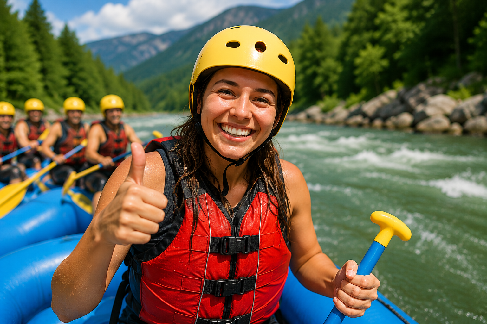

At RapidRush Rafting, our mission is to connect people with the raw power and beauty of nature through safe, exhilarating white water adventures. We believe every river tells a story — and we're here to help you live it. Whether you're a first-timer or a seasoned paddler, we guide you every stroke of the way.